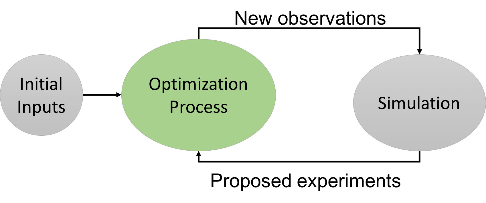

The iterative process of optimization is controlled by the inputs:
If you are running the tool for the first time, the New Observed Value input can be blank or have any value. After the first simulation is performed, the program will suggest a new design for your experiment. The result of the suggested experiment should be entered in the New Observed Value field for a new simulation. This process should continue until the maximum number of iterations is reached, the proposed designs are completely evaluated, or until the Finish Executions control is activated.
